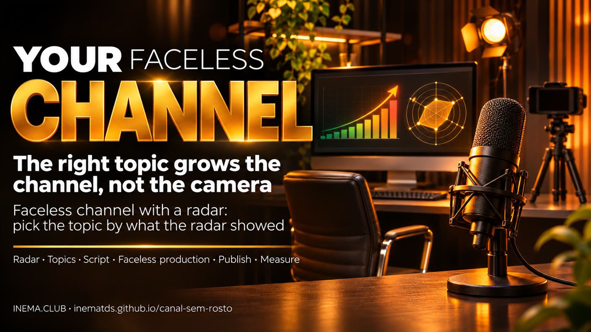

What makes a channel grow is the right topic, not the camera. The faceless channel with a radar chooses a topic based on what the radar showed (the radar is a free dashboard that shows, every morning, videos that far exceeded their channel's own typical views): topics where small channels got many times their usual numbers.

A lot of people want to have an AI channel, but don't want to appear on camera. The good news: in our YouTube radar, the topic—not the person on camera—drove the most views. The faceless channel with a radar is a 5-step method and a free kit: it reads the radar of what’s trending, separates the topics where small and medium channels broke through, and suggests topics with the numbers and a faceless format for each one. You need a computer with Python and the radar youtube-bombando (also free). There’s no promise of money or views: the radar shows an opportunity.
On your phone? Watch the vertical version (Short). The video is in Portuguese.
Our radar run on Nov 12, 2026: 320 recent videos across 7 AI topics. For each video, the radar compares its views with the channel’s usual performance (the median of its recent videos). Did it get 3 times or more the usual number? Then the topic broke out beyond the channel's audience. Channel small = fewer than 10,000 subscribers; medium = 10,000 to 500,000; above that, large.
came from videos that got 3× or more the channel’s usual views. The audience was interested in the topic.
broke out of their bubble through their content this round: 48% of the 105 videos from those channels where the radar could measure the usual level, compared with 5 of 27 (19%) from large channels.
was the biggest jump of the round, on a small channel, about a new ChatGPT feature for businesses.
Share of each topic's views that came from videos with 3× or more the channel's usual results (the radar's "Content" category).
How many times the channel's own typical number, by video duration: the middle value in each range (median), from the same round. The number of videos is in parentheses.
Real output from the kit based on the Nov 12, 2026 radar. Only topics where at least 2 different small or medium-sized channels got 3× or more its usual views, with 1,000 views or more. No channel or video names appear in the output: only the topic and numbers (here with shortened labels for topics and formats).
← drag the table sideways to see the faceless format →
| # | Topic | Channels | How many times the usual number (median) | Most common duration | Faceless format |
|---|---|---|---|---|---|
| 1 | complete course or guide from scratch, in Claude Code | 4 | 27.3× | 20–60 min | screen recording with your narration, a project in stages |
| 2 | Claude Code (multiple topics) | 3 | 11.3× | 8–20 min | animated explainer or diagram with your voice, a case from start to finish |
| 3 | automation and agents, under AI agents | 3 | 4.9× | 20–60 min | screen recording with your narration, a project in stages |
| 4 | business, in ChatGPT | 2 | 412.1× | up to 8 min | animated explainer with your voice, a question answered with a demonstration |
| 5 | industry opinion and trends, in AI | 2 | 57.8× | 8–20 min | animated explainer or diagram with your voice, a case from start to finish |
| 6 | build diary (a series of days), in vibe coding | 2 | 28.7× | more than 60 min | animated chart or diagram with your voice, in chapters |
| 7 | images, audio, and video, in ChatGPT | 2 | 16.2× | 8–20 min | animated explainer or diagram with your voice, a case from start to finish |
| 8 | making money and business, in making money with AI | 2 | 15.5× | 20–60 min | animated explainer with your voice, a project in stages |
| 9 | a new feature in AI agents | 2 | 3.7× | 8–20 min | commentary on a news story with your opinion and a test of your own |
| 10 | free tools, skills, and plugins, in Claude Code | 2 | 3.4× | 8–20 min | animated explainer or diagram with your voice, a case from start to finish |
The numbers change with each round. To get today's topics for your subject, see how to use it ↓.
From topic to published video, then back to the radar to see how it did.
Run the radar for what’s taking off in your topic and ask the kit for topics. A good topic is one where a small channel got many times its usual views: the audience came for the topic, not the name.
In the first 15 seconds, speak to the viewer's pain point or desire using "you." One idea per video. The kit curiosidade-viral helps find the hook.
A screen recording with your narration, an animated whiteboard or diagram, and a real test with commentary. Showing your face is optional; thinking, testing, and explaining aren’t.
The title and thumbnail say what the viewer gets. The length follows what the radar showed for your topic. Publish at a pace you can keep up.
Seven days later, compare your video with your channel’s usual number. Did it break through? Keep the topic. If not, change the topic, not the camera.
Checked on Nov 13, 2026 against YouTube’s official help pages. This changes: always check the source before deciding.
1,000 subscribers and 4,000 public watch hours in the last 12 months, or 1,000 subscribers and 10 million Shorts views in 90 days. Source
1,000 subscribers and 8,000 hours in 365 days, or 20 million Shorts views in 90 days. Anyone already in the program isn't affected. Fan features are still available with 500 subscribers and 3,000 hours in the last year, or 3 million Shorts views in 90 days. Source
Template-based and repetitive content: image slideshows or scrolling text without narration, generic AI content mass-produced without the creator’s perspective, reading text from a website or news story you didn’t create. Source
Three free INEMA kits that complement each other.
The radar: every morning, what's trending in your topic, and why.
Turns the radar into faceless topics, with the numbers and format.
Helps you write the hook that keeps people watching.
From here down is the technical part: downloading, running, and reading the topics. You don't need this part to understand what's above.
Read the radar file (dados.json) and saves saida/pautas.md and saida/pautas.json: up to 10 topics, weak signals (a topic that broke out on just one channel), and what falls outside the method.
Check your script or output for another creator’s channel name, title, or video ID before publishing.
The 5 steps, one per file, and the YouTube rules checked against the source, with the date.
Each video's title is used only to identify the topic (full course, comparison, news, business, etc.) and never appears in the output. Order: most distinct channels first, then highest median, then most views. If fewer than 10 topics qualify, the kit says how many qualified and doesn't fill the list with weak signals. Topics are in temas.json and you can edit it.
Standard library only, nothing to install with pip. Tested on Linux; on Windows, the command is usually python or py instead of python3. Check:
python3 --versionTo download the kit. Without git, use "Code → Download ZIP" on the GitHub page and extract it next to the radar folder.
In the same folder as the radar (so the two folders are side by side):
git clone https://github.com/inematds/canal-sem-rosto cd canal-sem-rosto
It’s what generates the dados.json. Install it with its guide and swap in topics for your niche.
The repository includes a mock radar so you can see the output before you have your own:
python3 pautas.py exemplos/dados-sintetico.json # open saida/pautas.md
The radar saves the file in painel/dados.json, inside its folder, after the first collection. Without a path, the kit looks for the radar in the folder next to it (../youtube-bombando), in ~/projetos/youtube-bombando and in ~/youtube-bombando. If it’s somewhere else, provide the path:
python3 pautas.py python3 pautas.py ../youtube-bombando/painel/dados.json
Default: 10 topics, 1,000 views or more, 3× the channel's usual results, at least 5 videos in the channel average.
python3 pautas.py --n 5 --piso-views 5000 --fator 4
With --detalhes, the kit also saves saida/detalhes-PRIVADO.md with titles and channels for each topic, for you to study. Don't publish this file.
python3 pautas.py --detalhes
Save your script in a text file (e.g., roteiro.txt). The checker searches it for the exact name of each channel, the full title of each video and the radar IDs (a piece of a title is not caught: reread it yourself too). If it finds one, it shows the file, line, and masked name (e.g., roteiro.txt:3:U***I) and exits with code 1: remove the name and run it again.
python3 checa_sem_fonte.py ../youtube-bombando/painel/dados.json roteiro.txt # "nenhuma fonte de terceiro encontrada" (no third-party source found; the kit prints in Portuguese) = you can proceed
python3 -m unittest discover -s tests
| File | What it is |
|---|---|
exemplos/dados-sintetico.json | fictional radar, with made-up channels and titles, covering difficult cases (no channel size, no duration, humor, large channel) |
exemplos/pautas-exemplo.md | the kit’s output based on this made-up radar |
metodo/regras-youtube.md | the rules for the Partner Program and repetitive content, with official sources and the date they were checked |